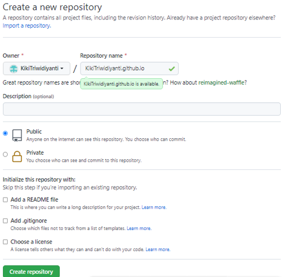

LANGKAH 1

Step 1 create a new repository with the name KikiTriwidiyanti.github.io
Step 1 create a new repository with the name KikiTriwidiyanti.github.io
Step 2 create an empty folder then right click on the empty folder and select git bash here.
Step 5 is with the git add command. to add all files and directories that will be committed later.
Step 4 copy all the html template files to paste in the empty folder that has been created, then right click and select git bash here in the repository folder.
Step 7 to check the status if all files have been committed by using the git status command and the git log command to view the logs of several commits.
Step 8 is to enter the command git push –u origin main which serves to push to github because the branch is main, so here I write main.